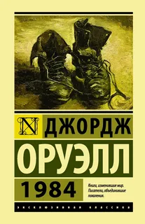
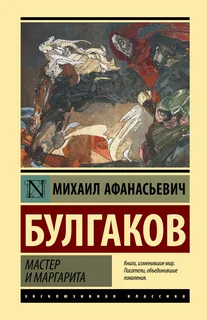
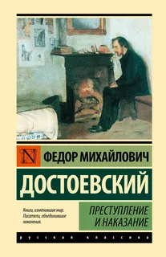
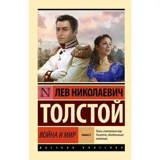
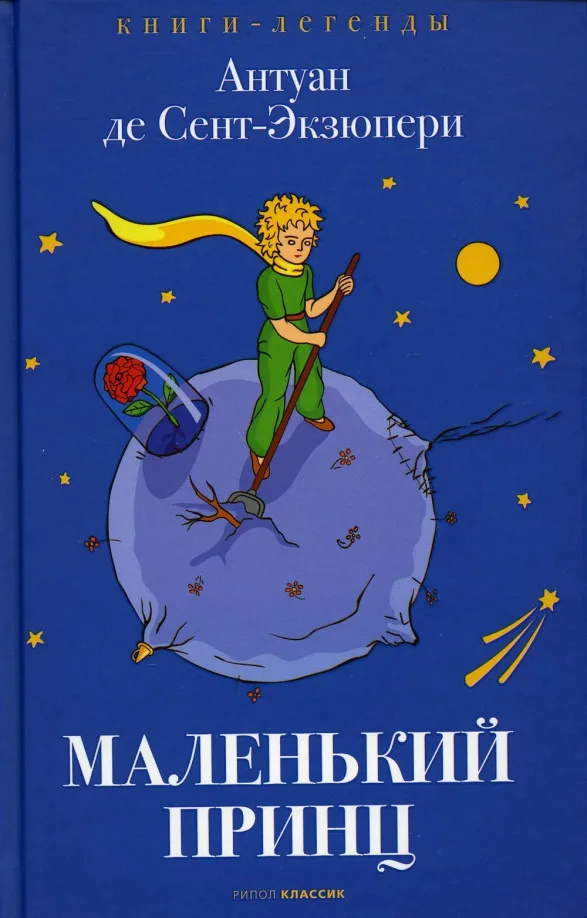

1984 — Джордж Оруэлл | Жанр: Антиутопия | Год: 1949 | Доступно: 4

Мастер и Маргарита — М. Булгаков | Жанр: Роман | Год: 1966 | Доступно: 0

Преступление и наказание — Ф.М. Достоевский | Жанр: Роман | Год: 1866 | Доступно: 2

Война и мир — Л.Н. Толстой | Жанр: Роман | Год: 1869 | Доступно: 5

Маленький принц — А. де Сент-Экзюпери | Жанр: Сказка | Год: 1943 | Доступно: 1